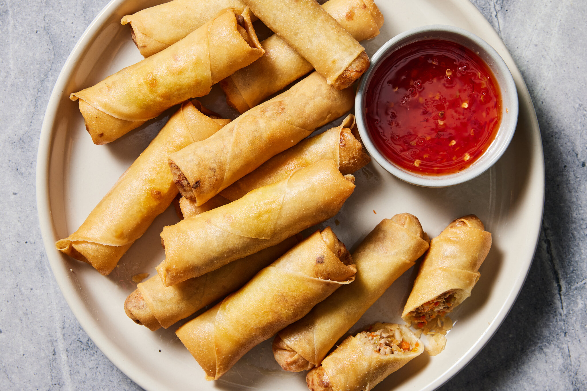

lumpia recipe

description
this is a traditional filipino recipe for lumpia, or fried spring rolls. they're made with paper-thin lumpia wrappers and filled with a savory mixture of ground pork, cabbage, and other vegetables. serve lumpia as a side dish or appetizer with a sweet chili dipping sauce. this recipe will be enough for 1-2 persons. adjust this recipe if necessary.
ingredients
- 0.50kg ground pork
- 2 eggs
- minced 1 clove of garlic
- minced 1 onion
- minced 1 carrot
- 2 tablespoon crispy fry breading mix
- lumpia wrapper
how to make it
- mix the ground pork, eggs, garlic, onion, carrot and crispy fry until you get a sticky consistency.
- get a tablespoon of the mixture and put it a lumpia wrapper.
- fold the wrapper and use water to seal it.
- repeat step 2 and 3 until all of the mixture is used.
- fry each lumpia.
- serve them with rice and jufran sauce.